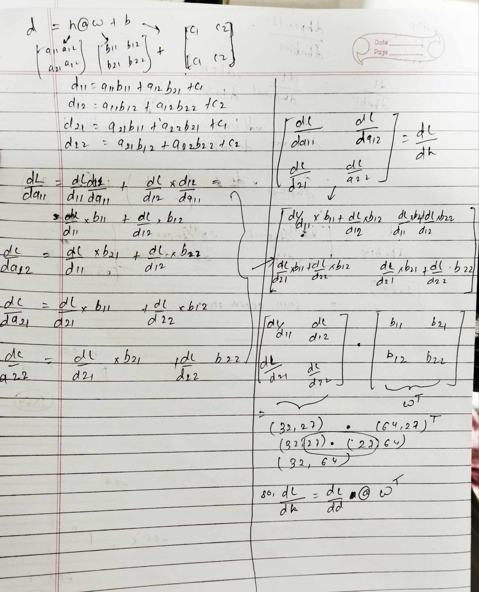
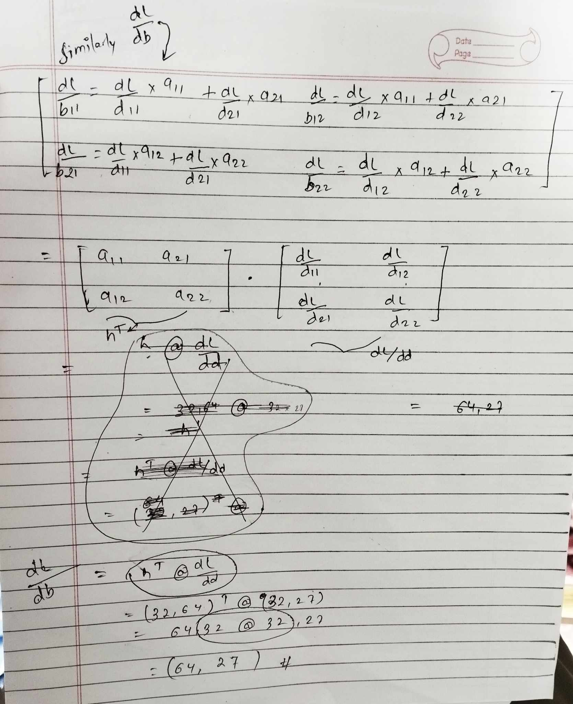

Main code
n_embd = 10 # the dimensionality of the character embedding vectors
n_hidden = 64 # the number of neurons in the hidden layer of the MLP
g = torch.Generator().manual_seed(2147483647) # for reproducibility
C = torch.randn((vocab_size, n_embd), generator=g)
# Layer 1
W1 = torch.randn((n_embd * block_size, n_hidden), generator=g) * (5/3)/((n_embd * block_size)**0.5)
b1 = torch.randn(n_hidden, generator=g) * 0.1 # using b1 just for fun, it's useless because of BN
# Layer 2
W2 = torch.randn((n_hidden, vocab_size), generator=g) * 0.1
b2 = torch.randn(vocab_size, generator=g) * 0.1
# BatchNorm parameters
bngain = torch.randn((1, n_hidden))*0.1 + 1.0
bnbias = torch.randn((1, n_hidden))*0.1
# Note: I am initializating many of these parameters in non-standard ways
# because sometimes initializating with e.g. all zeros could mask an incorrect
# implementation of the backward pass.
parameters = [C, W1, b1, W2, b2, bngain, bnbias]
print(sum(p.nelement() for p in parameters)) # number of parameters in total
for p in parameters:
p.requires_grad = True
batch_size = 32
n = batch_size # a shorter variable also, for convenience
# construct a minibatch
ix = torch.randint(0, Xtr.shape[0], (batch_size,), generator=g)
Xb, Yb = Xtr[ix], Ytr[ix] # batch X,Y
# forward pass, "chunkated" into smaller steps that are possible to backward one at a time
emb = C[Xb] # embed the characters into vectors
embcat = emb.view(emb.shape[0], -1) # concatenate the vectors
# Linear layer 1
hprebn = embcat @ W1 + b1 # hidden layer pre-activation
# BatchNorm layer
bnmeani = 1/n*hprebn.sum(0, keepdim=True)
bndiff = hprebn - bnmeani
bndiff2 = bndiff**2
bnvar = 1/(n-1)*(bndiff2).sum(0, keepdim=True) # note: Bessel's correction (dividing by n-1, not n)
bnvar_inv = (bnvar + 1e-5)**-0.5
bnraw = bndiff * bnvar_inv
hpreact = bngain * bnraw + bnbias
# Non-linearity
h = torch.tanh(hpreact) # hidden layer
# Linear layer 2
logits = h @ W2 + b2 # output layer
# cross entropy loss (same as F.cross_entropy(logits, Yb))
logit_maxes = logits.max(1, keepdim=True).values
norm_logits = logits - logit_maxes # subtract max for numerical stability
counts = norm_logits.exp()
counts_sum = counts.sum(1, keepdims=True)
counts_sum_inv = counts_sum**-1 # if I use (1.0 / counts_sum) instead then I can't get backprop to be bit exact...
probs = counts * counts_sum_inv
logprobs = probs.log()
loss = -logprobs[range(n), Yb].mean()
# PyTorch backward pass
for p in parameters:
p.grad = None
for t in [logprobs, probs, counts, counts_sum, counts_sum_inv, # afaik there is no cleaner way
norm_logits, logit_maxes, logits, h, hpreact, bnraw,
bnvar_inv, bnvar, bndiff2, bndiff, hprebn, bnmeani,
embcat, emb]:
t.retain_grad()
loss.backward()
loss
Initially we have this forward pass of a NN, how do we backpropagate through this? We simply call loss.backward() which is an abstraction of pytorch’s autograd engine, it’ll construct computation graph and calculate gradients for all the nodes under the hood.
How can we do it manually?
here’s how
Manual Backprop
# Exercise 1: backprop through the whole thing manually,
# backpropagating through exactly all of the variables
# as they are defined in the forward pass above, one by one
# -----------------
# YOUR CODE HERE :)
dlogprobs = torch.zeros_like(logprobs)
dlogprobs[range(n), Yb] = -1.0*(1/logprobs.shape[0]) # 1
dprobs = (1/probs)*dlogprobs # 2
dcounts_sum_inv = (dprobs*counts).sum(1, keepdim = True)
dcounts = dprobs * counts_sum_inv
dcounts_sum = -1.0*((counts_sum)**(-2.0))*dcounts_sum_inv
dcounts += torch.ones_like(counts_sum)*dcounts_sum
dnorm_logits = norm_logits.exp()*dcounts
dlogit_maxes = (-1.0*dnorm_logits).sum(1,keepdim=True)
dlogits = (1.0*dnorm_logits)
dlogits += F.one_hot(logits.max(1).indices, num_classes=logits.shape[1])*dlogit_maxes
db2 = (dlogits*torch.ones_like(logits)).sum(0)
dh = dlogits @ W2.T
dW2 = h.T @ dlogits
dhpreact = dh*(1-h**(2))
dbnbias = (dhpreact*torch.ones_like(bnraw)).sum(0, keepdim= True)
dbngain = (dhpreact*bnraw*torch.ones_like(bnraw)).sum(0, keepdim=True)
dbnraw = dhpreact*bngain*torch.ones_like(bnraw)
dbnvar_inv = (dbnraw* (torch.ones_like(bndiff) * bndiff)).sum(0, keepdim=True)
dbndiff = (dbnraw* (torch.ones_like(bndiff) * bnvar_inv))
dbnvar = dbnvar_inv* (-0.5)*(((bnvar + 1e-5))**(-1.5))
dbndiff2 = (1.0/(n-1) )*torch.ones_like(bndiff2) * dbnvar
dbndiff += dbndiff2*2*(bndiff)
dhprebn = dbndiff*1.0
dbnmeani = (torch.ones_like(hprebn)*-1.0*dbndiff).sum(0, keepdim = True)
dhprebn += torch.ones_like(hprebn)*(1/n)*dbnmeani
db1 = (torch.ones_like(dhprebn)*dhprebn).sum(0)
dembcat = dhprebn @ W1.T
dW1 = embcat.T @ dhprebn
demb = dembcat.view(emb.shape[0],emb.shape[1],emb.shape[2])
dC = torch.zeros_like(C)
for i in range(Xb.shape[0]):
for j in range(Xb.shape[1]):
dC[Xb[i,j]] += demb[i,j]
# print(demb[i,j].shape)
# -----------------
cmp('logprobs', dlogprobs, logprobs)
cmp('probs', dprobs, probs)
cmp('counts_sum_inv', dcounts_sum_inv, counts_sum_inv)
cmp('counts_sum', dcounts_sum, counts_sum)
cmp('counts', dcounts, counts)
cmp('norm_logits', dnorm_logits, norm_logits)
cmp('logit_maxes', dlogit_maxes, logit_maxes)
cmp('logits', dlogits, logits)
cmp('h', dh, h)
cmp('W2', dW2, W2)
cmp('b2', db2, b2)
cmp('hpreact', dhpreact, hpreact)
cmp('bngain', dbngain, bngain)
cmp('bnbias', dbnbias, bnbias)
cmp('bnraw', dbnraw, bnraw)
cmp('bnvar_inv', dbnvar_inv, bnvar_inv)
cmp('bnvar', dbnvar, bnvar)
cmp('bndiff2', dbndiff2, bndiff2)
cmp('bndiff', dbndiff, bndiff)
cmp('bnmeani', dbnmeani, bnmeani)
cmp('hprebn', dhprebn, hprebn)
cmp('embcat', dembcat, embcat)
cmp('W1', dW1, W1)
cmp('b1', db1, b1)
cmp('emb', demb, emb)
cmp('C', dC, C)
Results
logprobs | exact: True | approximate: True | maxdiff: 0.0
probs | exact: True | approximate: True | maxdiff: 0.0
counts_sum_inv | exact: True | approximate: True | maxdiff: 0.0
counts_sum | exact: True | approximate: True | maxdiff: 0.0
counts | exact: True | approximate: True | maxdiff: 0.0
norm_logits | exact: True | approximate: True | maxdiff: 0.0
logit_maxes | exact: True | approximate: True | maxdiff: 0.0
logits | exact: True | approximate: True | maxdiff: 0.0
h | exact: True | approximate: True | maxdiff: 0.0
W2 | exact: True | approximate: True | maxdiff: 0.0
b2 | exact: True | approximate: True | maxdiff: 0.0
hpreact | exact: True | approximate: True | maxdiff: 0.0
bngain | exact: True | approximate: True | maxdiff: 0.0
bnbias | exact: True | approximate: True | maxdiff: 0.0
bnraw | exact: True | approximate: True | maxdiff: 0.0
bnvar_inv | exact: True | approximate: True | maxdiff: 0.0
bnvar | exact: True | approximate: True | maxdiff: 0.0
bndiff2 | exact: True | approximate: True | maxdiff: 0.0
bndiff | exact: True | approximate: True | maxdiff: 0.0
bnmeani | exact: True | approximate: True | maxdiff: 0.0
hprebn | exact: True | approximate: True | maxdiff: 0.0
embcat | exact: True | approximate: True | maxdiff: 0.0
W1 | exact: True | approximate: True | maxdiff: 0.0
b1 | exact: True | approximate: True | maxdiff: 0.0
emb | exact: True | approximate: True | maxdiff: 0.0
C | exact: True | approximate: True | maxdiff: 0.0
The result verifies that our gradients matches pytorch’s.
Step-by-step calculation
Backpropagating on scalars is pretty straightforward as we did in our first note but when it comes to tensors, we need to make sure every element’s gradient in a tensor is calculated precisely.
let’s understand it line by line.
loss = -logprobs[range(n), Yb].mean()
now we calculate the derivative of loss (L) w.r.t logprobs, (NOTE: d(loss)/d(loss) is 1). here
we have: d(L)/dL to find: d(L)/dlogprobs
d(L)/dlogprobs = d(L)/dL x d(L)/dlogprobs # d(L)/dlogprobs is local gradient
d(L)/dlogprobs = 1.0 * d(L)/dlogprobs
Now what could be the d(L)/dlogprobs? let’s break it down by representing it into a simple matrix. let’s say logprobs is a matrix and using indexing [range(n), Yb] we pluck out it’s corresponding values and then we average it. let’s consider the plucked out values are
a1 , b1 , c1
it’s mean would be
1/3 x a1 + 1/3 x b1 + 1/3 x c1
the derivative of d(L)/da1 = 1/3 , d(L)/db1 = 1/3 , d(L)/dc1 = 1/3 we see a pattern here, derivate of every element is 1/total_no_of_elements.
so
dlogprobs = torch.zeros_like(logprobs) # because all the other elements will have 0 gradient as they'll be considered constant
dlogprobs[range(n), Yb] = 1.0 * 1/(-logprobs).shape[0]
logprobs = probs.log()
to find : dprobs
we know d(logx)/dx = 1/x, so its fairly simple.
dprobs = 1/probs * dlogprobs # don't forget to add the dlogprobs because its the gradient's that propagated
probs = counts * counts_sum_inv
let’s find dcounts_sum_inv we need to make sure that the gradient of any tensor should have the same size as that tensor. the shape of counts_sum_inv is (32,1)
dcounts_sum_inv
= (dprobs *torch.ones_like(count) * counts).sum(1, keepdim = True)
why do we sum it across rows? this is because in probs = counts * counts_sum_inv,
counts has shape (32,27) and counts_sum_inv has (32,1), so first the counts_sum_inv is broadcasted and is made into shape (32,27) by copying the column and then finally is multiplied with counts. There are two operations that take place in order (broadcasting and addition). So, when we backpropagate through this equation the order should be addition and broadcasting. so the dcounts_sum_inv is (dprobs * torch.ones_like(count) * counts), but this is of shape (32,27), as we have seen the columns in counts_sum_inv are broadcasted, which mean one column is used 27 times, so we know that from our first note that when a variable is used more than once it’s derivate is added up, so we sum across the rows (sum it 27 times).
dcounts_sum_inv = (dprobs* torch.ones_like(count) * counts).sum(1, keepdim = True)
Similarly, we can now calculate the gradients for tensors that were broadcasted in our forward pass. All the other gradient calculation is relatively straightforward except this equation
logits = h @ W2 + b2 # output layer
why? because if we go deep into matrix multiplication, we see there are two operations involved i.e multiplication and addition. The formula for calculating gradient for the equation above is derived in the picture below.

 We come up with a simple equation.
dh = dlogits @ W2.T
dW2 = h.T @ dlogits
I believe these were the main gradient calculation steps and gradients for other nodes can be calculated in a similar manner.
A more detailed code can be found here